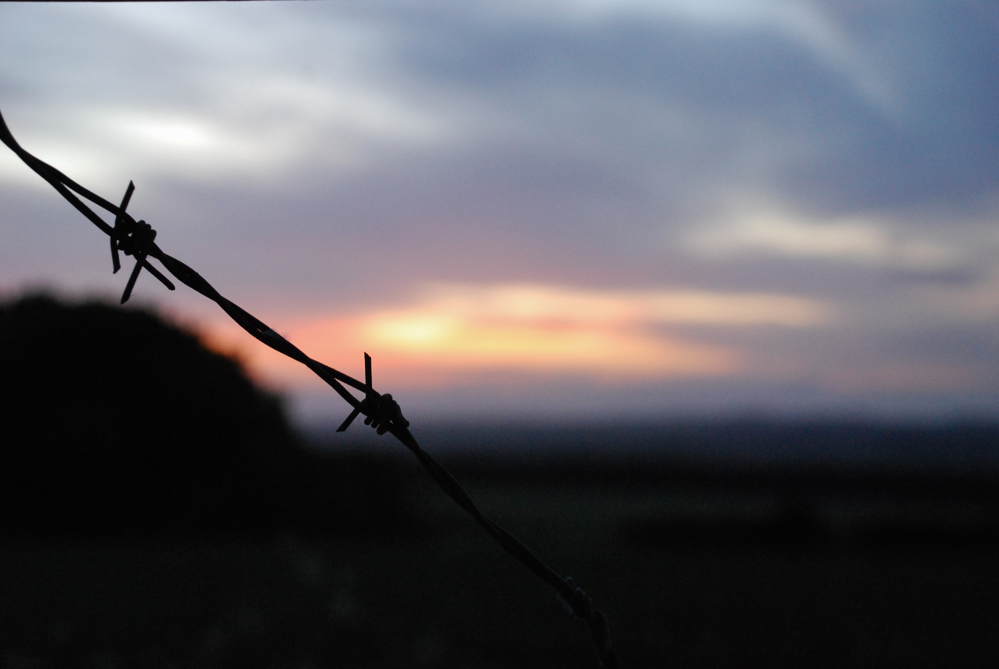
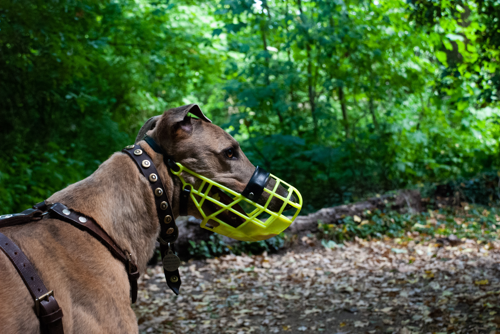
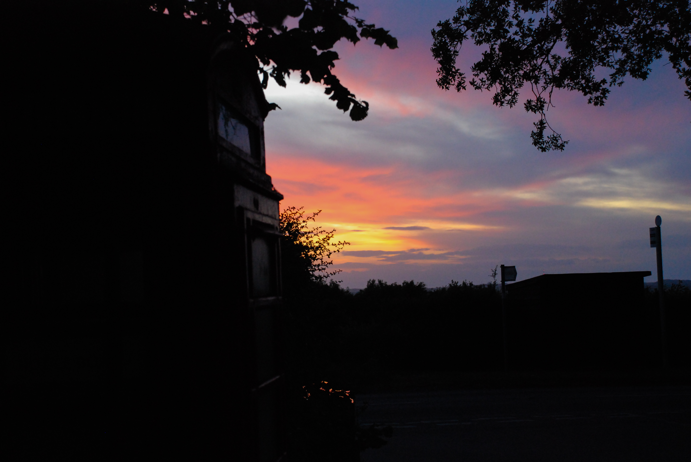

Photography
 Taken on a summer drive near home, the golden hour light is pierced by a piece of stray barbed wire.
 On hot afternoons you could easily find yourself staring up from the ground to see a sight like this.
On hot afternoons you could easily find yourself staring up from the ground to see a sight like this.
 A long dog walk through the forest will lead to moments like this.
 A lone phone box stands atop a hill in the light of the sunset.
 The sight from my grandparents’ house over the fields into the next village.
The sight from my grandparents’ house over the fields into the next village.